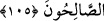

ilk hallerine iâde etmek, yoktan yaratmaya benzetilmiştir. Onların her ikisi de Allah’ın
kadîm kudretine göre müsâvîdir.”
Bu tekrar yaratma “üzerimize aldığımız” yerine getirilmesi bize gerekli olan “bir
vaad oldu. Biz,” vaad ettiğimizi mutlaka “yaparız.”
et-Te’vîlâtü’n-Necmiyye’de şöyle der: “Âyet sonundan başına kadar vücûd
mertebelerinin ifnâsı konusunda insânî vücûd semâsının celâl sıfatının tecellîsi ile
dürülmesine işâret etmektedir. “Tıpkı ilk yaratmaya başladığımız gibi” yâni nutfenin
başlangıcından îtibâren tedrîcen nutfeyi (bir damla meni) alaka (yapışkan bir sıvı),
alakayı mudğa (bir çiğnem et), mudğayı da kemikler hâline getirip yaratırız. Nitekim
Allah “Sonra onu başka bir yaratışla insan haline getirdik.” (el-Mü’minûn, 23/14)
buyurur.
“Onu tekrar o hâle getiririz.” İnsanlık vasfının sonundan hayvanlık vasfına,
hayvanlık vasfından nebatlık vasfına, nebâtîlik vasfından mürekkeblik vasfına,
mürekkeblik vasfından tek tek unsurlar vasfına, tek tek unsurlar vasfından melekûtîlik
vasfına, melekûtîlik vasfından rûhânîlik vasfına, rûhânîlik vasfından “Rabb’ine dön”
(el-Fecr 89/28) emrinin cezbesiyle rubûbiyyet vasfına döndürürüz.
Bu ezelde “üzerimize aldığımız bir vaad oldu. Biz,” vaad ettiğimizi ebede kadar
“yaparız.”
105. Andolsun Zikir’den sonra Zebûr’da da: “Yeryüzüne iyi kullarım vâris
olacaktır.” diye yazmıştık.
“Andolsun Zikir’den sonra” yâni Tevrat’ta yazdıktan sonra “Zebur’da da…”
Daha önce geçtiği üzere her semâvî kitap “zikir”dir. Zebûr, Dâvud (a.s.)’a verilen
kitabın adıdır. Nitekim Allah: “...Dâvud’a da Zebûr’u vermiştik.” (en-Nisa, 4/163)
buyurmuştur.
Râgıb şöyle der: “Zebûr” kalın yazıyla yazılmış demektir. Yazısı kalın olan her kitaba
“Zebûr” denir. Bu isim, Dâvud (a.s.)’a indirilen kitaba tahsis edilmiştir.”
Denilmiştir ki: “Bilakis Zebûr, ilâhî kitablardan anlaşılması zor olan her kitaba
denir.”
Bazıları da şöyle demiştir: “Zebûr, içinde şer’î hükümler bulunmayan sâdece fiilî
hikmetlere hasredilen ilâhî kitabın ismidir. Bu da Davûd (a.s.)’a verilen Zebûr’un şer’î
hükümleri ihtivâ etmediğine delâlet eder.”
el-Kâmûs’da şöyle der: “ez-Zebûr”; “mezbûr (yazılmış)” mânâsına kitab demektir.
Çoğulu “zübür”dür. Dâvud (a.s.)’a verilen kitap demektir.”
“Yeryüzüne iyi kullarım” sâlih kullarım, yâni kâfirleri sürüp uzaklaştırdıktan sonra